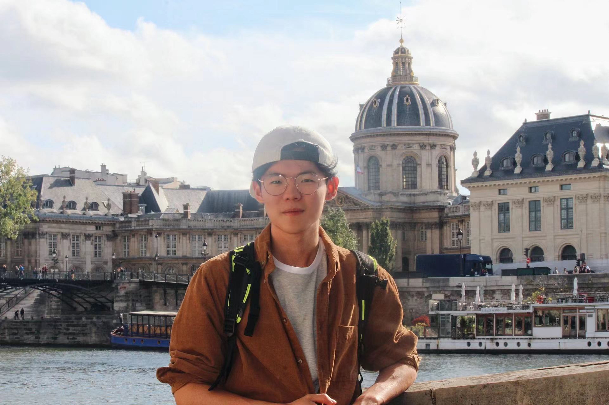
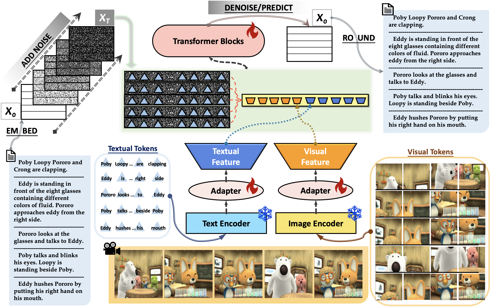
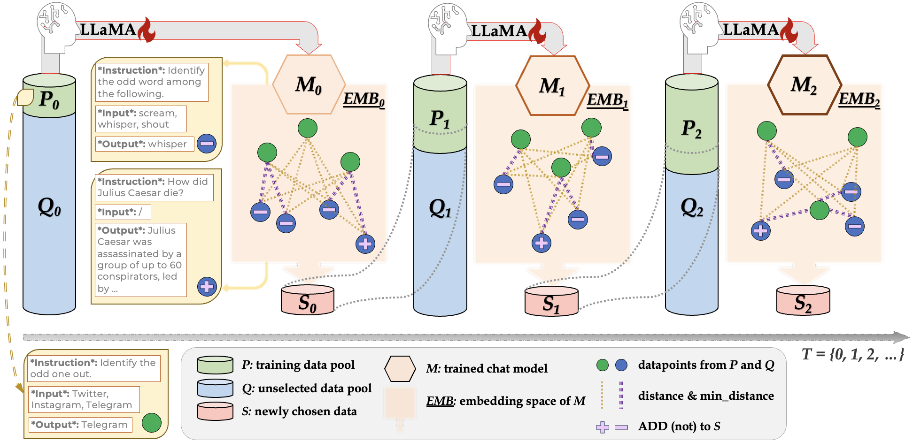
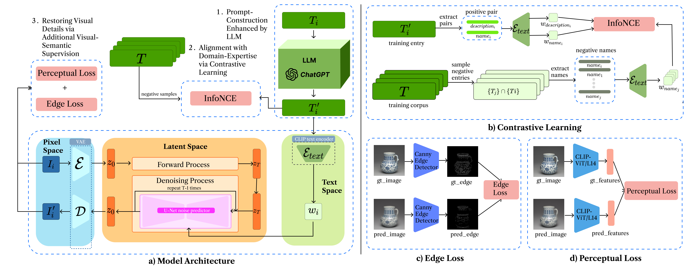
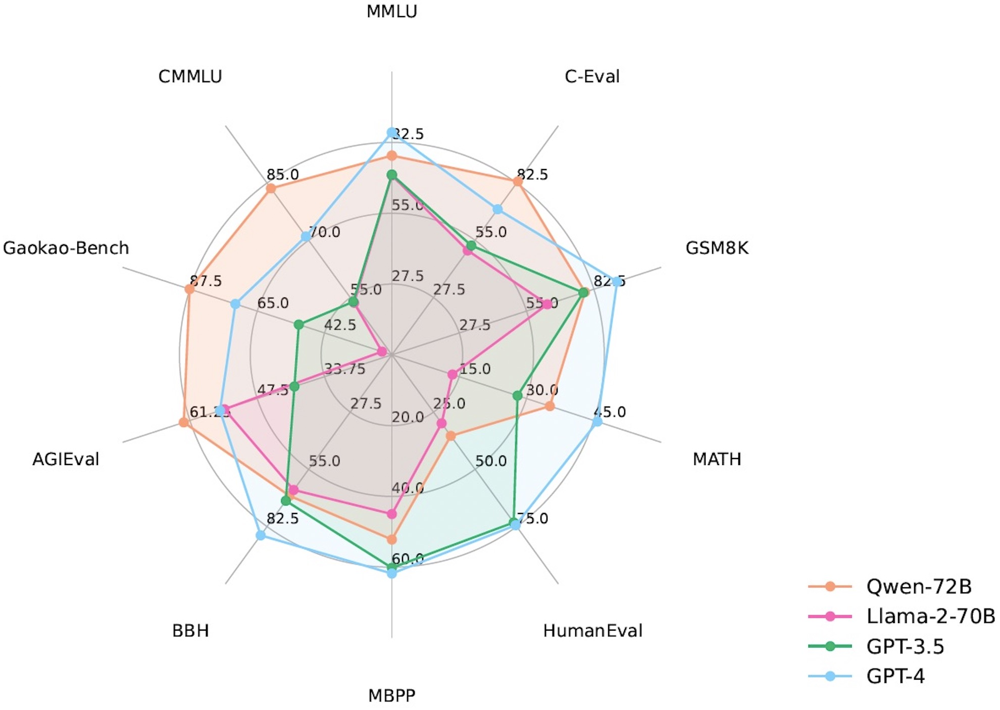

Continual Lifelong Learning:
Enabling AI agents to continually self-improve - to actively adapt to new information (data) and novel task objectives, as efficiently as an exceptional human learner.
|
Email: wushengguang [AT] stu.pku.edu.cn |
 |
|
Hi! My name is Shengguang Wu. You can also call me Daniel. I am a third-year Master's student at Peking University, where I am grateful to be advised by Prof. Qi Su. Currently, I am also a research intern in Qwen Team at DAMO Academy, Alibaba Group, where we develop state-of-the-art foundation LLMs such as QwenLM. |
|
I am broadly interested in the intersection area of Natural Language Processing (NLP), Computer Vision, and Linguistics. My current research focuses on developing human-like capabilities onto (Vision-)Lanaguage-Models. These include:
Controllable & Creative Generation:
Allowing diverse semantic controls in generative systems, while maintaining coherency and creativity in long-form discourse such as narratives.
Conversational Pragmatics:
Imparting LMs with such conversational aptitude, that they interpret subtle intents and pragmatic messages (e.g., implicatures) beyond literal semantics - akin to human interlocutors.
Multimodal Grounding & Reasoning:
Building VLMs upon the reciprocal enhancement of language and vision - drawing from visual feedback to optimize language-based reasoning and harnessing textual insights to guide visual grounding. |
|
|
(see also Google Scholar)
|
|  |
Findings of EMNLP, 2023
TL;DR: We introduced a novel non-autoregressive approach to visual storytelling, DiffuVST, which is a diffusion-based LM featuring bidirectional context guidance and multimodal adapters. It directly predicts ground-truth text embeddings from any noisy input, achieving superior performance across NLG metrics at a massively faster inference speed compared to strong autoregressive baselines.
|
|  |
Under Review, 2024
TL;DR: DiverseEvol is an efficient instruction-tuning method that allows the model itself to iteratively sample training subsets to improve its own performance, with a key selection principle of maintaining high diversity in the chosen subsets. Across three datasets and benchmarks, our models, trained on less than 4% of the original dataset, match or improve performance compared with finetuning on full data.
|
|  |
Under Review, 2024
TL;DR: We present an artifact recovery model that accurately generates images of lost artifacts adhering to historical knowledge. Key designs include: 1. prompt enhancement with archaeological knowledge elicited from LLMs; 2. contrastive learning for textual guidance on correlated historical expertise; 3. visual-semantic constraints on edge and perceptual features for learning intricate visual details.
|
|  |
ArXiv, 2023
TL;DR: We release Qwen, a family of highly-capabale foundation LLMs and Chat-Models. QwenLMs achieve superior performance than baselines (e.g., LLaMA2) of similar sizes on a wide range of benchmarks that measure natural language understanding, reasoning, problem solving, etc. Qwen-72B also outperforms GPT-3.5 on 70% of all tasks.
|
|
|
Huge thanks for the website template from YueYANG1996.github.io. |